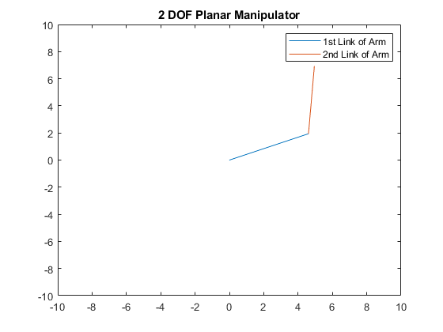

Author: Yash Bansod
GitHub: https://github.com/YashBansod
This is the main program.
Contents
Clear the environment and the command line
clear;
clc;
close all;
Add the directory containing relevant functions to the path variables
addpath('./INV-functions/')
Define the input parameters
Set the length of the links of the manipulator robot.
L1 = 5; L2 = 5; % This function will take desired manipulator position from user via mouse % pointer. Select a point using the mouse and then press Enter. % [expPoint, Joint] = INV_KIN_2DOF(L1,L2); % Alternatively, user can choose to pass the desired manipulator position % directly as absolute coordinates too. expX = 5; expY = 7; [expPoint, Joint] = INV_KIN_2DOF(L1, L2, expX, expY); fprintf("The final end effector position is (%0.2f, %0.2f)\n", expPoint); [m, n] = size(Joint); currPoint = [Joint(m,1); Joint(m,2)]; dist = sqrt((expPoint(1,1) - currPoint(1,1))^2 + ... (expPoint(2,1)-currPoint(2,1))^2 ); msgbox('Operation Complete')
The selected point for end effector is (5.00, 7.00) The final end effector position is (5.00, 7.00)